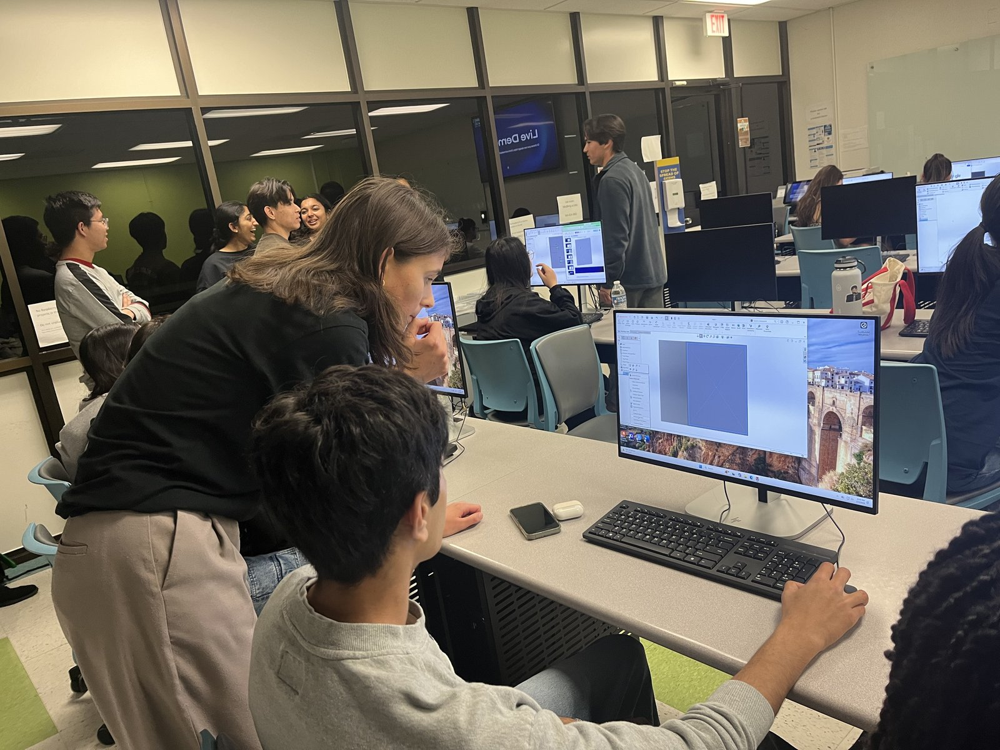
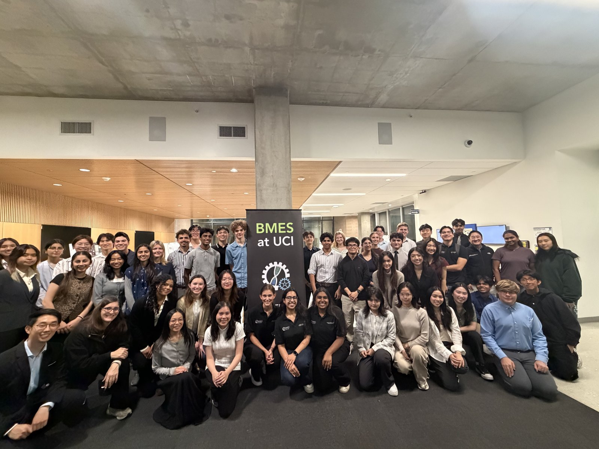

Bring your idea to life
BMES at UCI’s MedTech Founders Program is a year-long product development incubator that guides undergraduate teams from identifying an unmet clinical need to building a tested prototype. Through hands-on workshops and structured design reviews, students build the technical, design, and entrepreneurial skills needed to move their ideas forward. Each quarter culminates in a spotlight event where teams present their work to professors, industry professionals, and graduate students, gaining crucial feedback from people with extensive experience in healthcare, engineering, and product development. The program follows three phases: ideation, entrepreneurship, and prototyping, while allowing teams to participate for the full year or on a quarterly basis. Along the way, students work alongside other teams, mentors, and professionals, helping build a community of undergraduate innovators who can learn from one another. Ultimately, the program equips students to think like innovators, build like engineers, and turn early ideas into solutions with real-world impact.
The program in action


